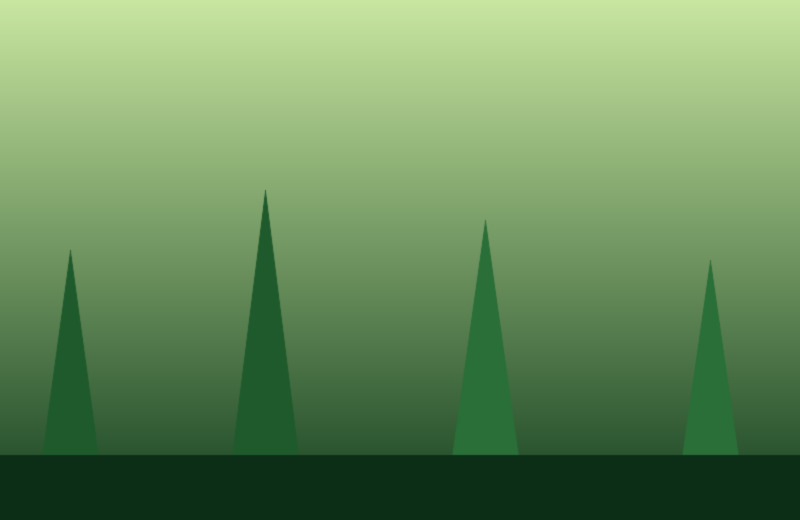

Three evenings, three coastlines
Notes and photographs from a fortnight spent working out how little kit you actually need.
The ridge at golden hourTwelve minutes of usable light.
Landscape
Harbour, blue hourLong exposure, no tripod, mixed results.
Coastal

Back through the pinesFlat light is not always the enemy.
Woodland